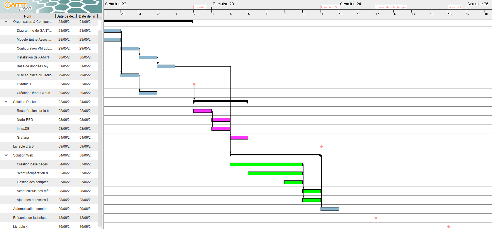
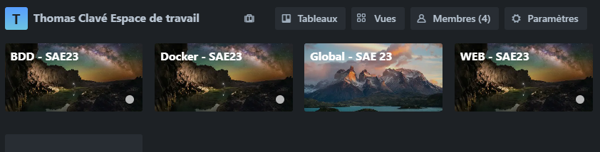
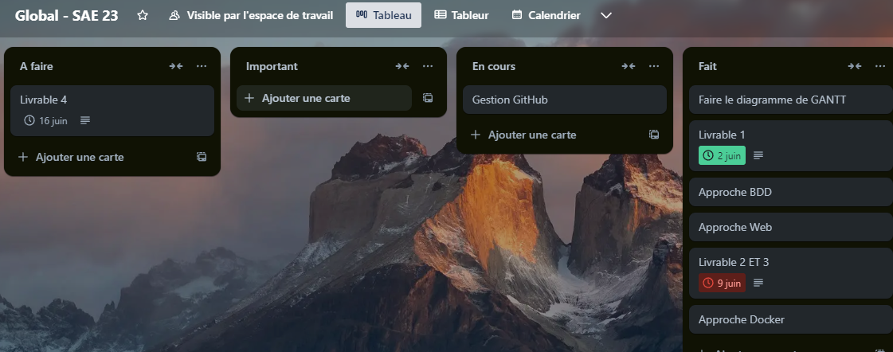

Diagramme de GANTT
Synthèse finale du projet sur un diagramme de GANTT à l'aide du logiciel GanttProject.

Utilisation d'outils collaboratifs
Afin de nous organiser dans la réalisation des différentes tâches, nous avons mis en place un Trello.
Nous avons fait le choix de répartir sur l'espace de travail, différents tableaux, comme le présente la capture suivante :

Voici le contenu d'un des tableaux, par exemple, le tableau « Global » :

Approche Personnelle de Chaque Membre
Approche de NSIMA Ernest
« Ce projet m'a permis de me familiariser avec Docker, ce qui a facilité le déploiement et la configuration de ces outils.
J'ai également compris l'importance de la gestion des versions avec Git et GitHub pour le suivi des modifications et la collaboration en équipe.
Ce projet m'a donné une base solide pour comprendre les concepts de conteneurisation et leur application pratique dans le développement d'applications. »
Approche de MEISSONNIER Florian
« Je me suis occupé tout d’abord de la création du GANTT prévisionnel ainsi que du GANTT final.
Parallèlement à cela, avec Thomas Clavé, nous nous sommes occupés du Trello. Une fois mes tâches de
gestion de projet effectuées, je me suis occupé des scripts PHP de récupération des données sur le broker
et de celui du calcul des métriques pour que les autres membres du groupe puissent les utiliser.
Ce projet m’a permis d’augmenter mes compétences en PHP et en SQL. »
Approche de MARTIN Samuel
« Au cours de cette SAE, je me suis occupé de configurer la machine virtuelle, installer le serveur LAMPP, mettre en place la base de données, développer la partie administration et la partie gestion dans leur intégralité.
Étant chef de projet, j’ai aussi été amené à développer mes compétences de gestion de projet en gérant l’organisation et l’avancement du projet au sein de l’équipe.
J’ai aussi assumé un travail de vérification auprès de mes coéquipiers afin d’obtenir un ensemble homogène. »
Approche de CLAVE Thomas
« À travers la réalisation de cette SAE, j'ai été amené à travailler sur différents outils qui m'ont fait progresser dans divers secteurs.
Parmi eux, j'ai pu dans un premier temps mettre en place avec Monsieur MEISSONNIER le Trello dans un objectif d'organisation.
J'ai aussi été en charge de la mise en place de Git et de la réalisation du squelette du Site et de son CSS.
Les pages publiques du site web ont aussi été sous ma charge.
Avec ce projet, j'ai pu travailler différentes compétences en web et en gestion de projet. »
Synthèse des problèmes et les solutions apportées
Problèmes rencontrés lors des premières utilisations de la VM :
Certaines dépendances devaient être installées afin d'effectuer les différents tests et mettre le travail en commun.
Pour pallier ce problème, Monsieur MARTIN a mis en place une VM contenant l'ensemble des dépendances nécessaires, partagée avec l'ensemble du groupe.
Un objectif simple, harmoniser le développement futur sans la contrainte d'adaptabilité entre machines.
Problèmes rencontrés lors de la réalisation des fonctions sur NodeRed :
Nous avons rencontré plusieurs erreurs de syntaxe en écrivant le script de la fonction NodeRed.
Ces erreurs nous ont rappelé l'importance d'une syntaxe correcte lors de la programmation.
Ainsi, nous avons dû corriger ces erreurs pour que la fonction fonctionne comme prévu.
Problèmes rencontrés lors de la configuration InfluxDB :
Nous avons rencontré plusieurs difficultés lors de la configuration du nœud « influxdb out».
Ainsi, nous avons dû comprendre comment InfluxDB s'attend à recevoir les données et adapter la configuration du nœud en conséquence.
Problèmes rencontrés lors de la configuration InfluxDB :
Nous avons rencontré plusieurs difficultés lors de la configuration du nœud « influxdb out».
Ainsi, nous avons dû comprendre comment InfluxDB s'attend à recevoir les données et adapter la configuration du nœud en conséquence.
Problèmes rencontrés lors de la réalisation du script de récupération :
Lors de l'écriture du script de récupération des données sur le broker MQTT.
Nous avons rencontré des erreurs avec les commandes de récupération des données du broker.
Les conséquences : différents paquets non installés, Visual Studio Code ne trouvait pas le socket de LAMP, etc...
Une fois ces problèmes assez simples réglés, il a fallu trier les différentes données et les envoyer dans la base de données, dans les bonnes tables et les bonnes colonnes.
Le fait d'utiliser des requêtes SQL dans du PHP nous a donné du fil à retordre. Ce sont deux langages qui nécessitent une bonne maîtrise.
Degré de satisfaction
Pour cette SAE, nous estimons notre degré de satisfaction à 7/10.
Afin d'argumenter cette notation, nous sommes déçus quant au choix des délais et de son positionnement dans le temps au sein du semestre.
Comme toutes les SAEs, elles ont toutes lieu en cette fin de semestre, faisant passer la productivité au détriment de l'apprentissage et de la recherche du dépassement de compétences.
Nous pensons qu'une nouvelle organisation des SAEs est envisageable pour les promotions à venir.